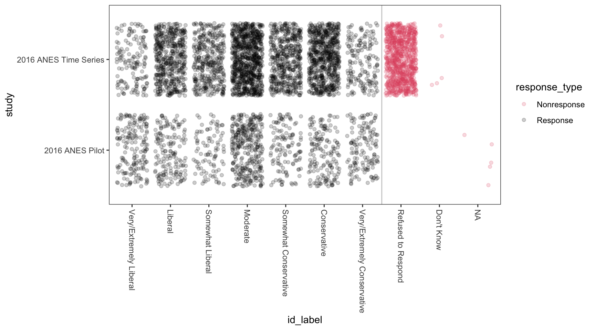
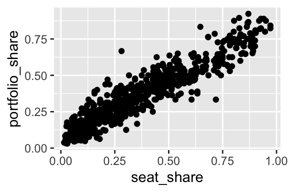
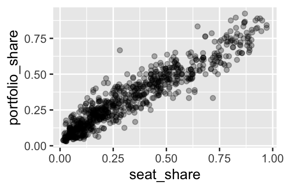
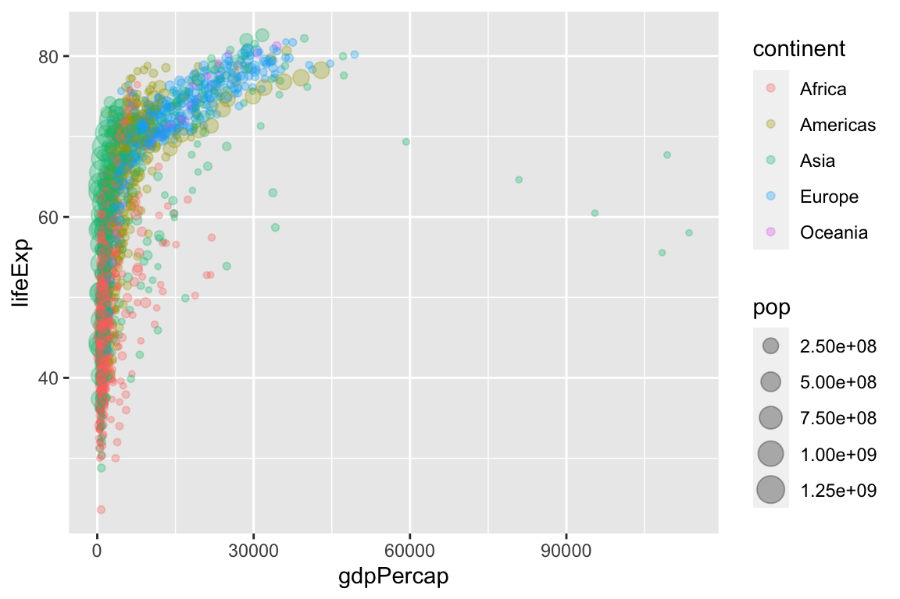
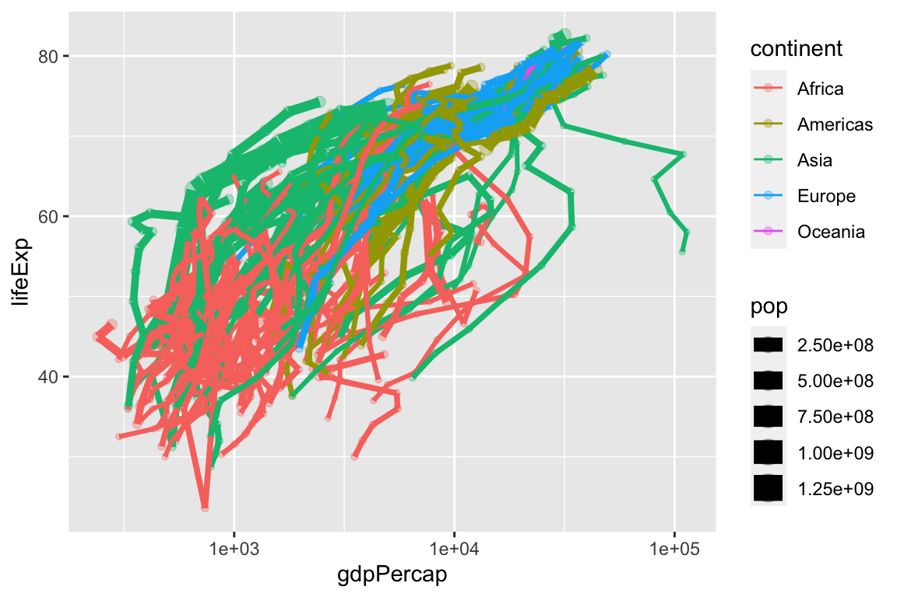

Chapter 7 Regression
7.1 The Conditional Average
Have a look at the scatterplot below. What’s the portfolio share of a party in a coalition government with a seat share of 25%?

Your eyes probably immediately begin examining a vertical strip above 25%.

You probably estimate the average is a little more than 25%… call it 27%. You can see that the SD is about 10% because you’d need to go out about 10 percentage points above and below the average to grab about 2/3rds of the data.

Now you’re informed by the data and ready to answer the question.
- Q: What’s the portfolio share of a party in a coalition government with a seat share of 25%?
- A: It’s about 28% give or take 10 percentage points or so.
Notice that if we break the data into many small windows, we can visually create an average (and an SD) for each. Freedman, Pisani, and Purves (2008) refer to this as a “graph of averages.” It’s a conceptual tool to help us understand regression.

For some datasets, these averages will fall roughly along a line. In that case, we can described the average value of \(y\) for each value of \(x\)–that is, the conditional average of \(y\)–with a line.

7.2 The “Best” Line
So far, we’ve made comparison between sets of measurements by…
- Comparing the histograms of the sets of measurements (e.g., the ideologies of representatives from the 100th and 115th Congresses).
- Comparing the average or SD of sets of the measurements (e.g., the ideologies of representatives from the 100th and 115th Congresses).
- Computing the correlation coefficient between two sets of measurements (e.g., the portfolio share and the seat share for coalition governments)
Regression allows us to extend the correlation coefficient–a measure of how well two variables “go together”–into a more inutitive, informative quantity.
Regression allows us to answer the question “What is the average of \(y\)?” for many different values of \(x\). Rather than compare a small number of scenarios (e.g., the 100th and 115th Congresses), the regression line allows us to compare the average of \(y\) as \(x\) varies continuously.
In short, we describe the average value of \(y\) as a linear function of \(x\), so that
\(\text{the average of } Y = mX + b\).
7.2.1 Adequancy of a Line
In some cases, a line can describe the average value \(y\) quite well. In other cases, a line describles the data poorly.
Rememeber, the regression line describes the average value of \(y\) for different values of \(x\). In the figure below, the left panel shows a dataset in which a line does not (and cannot) adequately describe the average values of \(y\) for describe low, middle, and high values (at least ad the same time). The right panel shows a data in which a line can adequantely describe how the average value of \(y\) changes with \(x\). We can see that when \(x \approx -2\), then \(y \approx 0\). Similarly, when \(x \approx 0\), then \(y \approx 4\). A line can describe the average value of \(y\) for varying values of \(x\) when the average of \(y\) changes linearly with \(x\).

A line does a great job of describing the relationship between seat shares and portfolio shares in government coalitions.

A line poorly describes the relationship between Polity IV’s DEMOC measure and GDP per capita.

When we have variable that’s skewed heavily to the right, we can sometimes more easily describe the log of the variable. For this dataset, the line poorly describes the average logged GDP per capita for the various democracy scores.

7.3 A Warning
When we simply describe a single set of measurements with a histogram or an average, then we intuitively remain in the world of description. Indeed, making a causal claim requires a comparing factual and counterfactual scenarios. In the case of a single histogram or average we only have one scenario.
When we have descriptions of multiple sets of measurements, say the average life expectancy for democracies and the average life expectancy for autocracies, we an easily interpret one scenario as factual and the other as counterfactual. On its face, though, both scenarios are factual. We can comfortably say that democracies have healthier populations than autocracies without claim that the regime type causes this difference. But it is oh so tempting.
Regression models, by design, describe data in a range of scenarios. The temptation to treat these neatly arranged scenarios as factual and counterfactual grows even stronger. But as a default, statistical models describe the factual world.
With few exceptions, statistical data analysis describes teh outcomes of real social processes and not the processes themselves. It is therefore important to attend to the descriptive accuracy of statistical models, and to refrain from reifying them. —Fox (2008, p.3)
Note that some methodologists claim that their statistical models can obtain estimates of the causal effects. These models might actually succeed on occasion. However, the researcher should carefully avoid seeing counterfactual worlds from regression models.
Usually, credible causal inferences come from careful design in the data collection stage, not from complicated conditioning at the modeling stage.
7.4 Slope and Intercept
Take a look at the scatterplot below. It shows several potential lines to describe the relationship between x and y. Indeed, each of these lines seems reasonable. We can imagine many more reasonable lines.
library(tidyverse)
library(broom)
df <- tibble(x = seq(-2, 2, length.out = 10),
y = x + rnorm(length(x)))
fit <- lm(y ~ x, data = df)
draws <- MASS::mvrnorm(n = 9,
mu = coef(fit),
Sigma = vcov(fit))
pred_df <- df %>%
augment(fit, data = .) %>%
glimpse()Observations: 10
Variables: 8
$ x <dbl> -2.0000000, -1.5555556, -1.1111111, -0.6666667, -0.22…
$ y <dbl> -2.5249137, -2.0937822, -2.1500948, -0.1535250, -0.74…
$ .fitted <dbl> -2.5640924, -1.9934756, -1.4228589, -0.8522421, -0.28…
$ .resid <dbl> -0.03917865, 0.10030655, 0.72723590, -0.69871708, 0.4…
$ .std.resid <dbl> 0.07351885, -0.17566273, -1.21609365, 1.13548468, -0.…
$ .hat <dbl> 0.3454545, 0.2484848, 0.1757576, 0.1272727, 0.1030303…
$ .sigma <dbl> 0.7039309, 0.7028094, 0.6357594, 0.6449334, 0.6789218…
$ .cooksd <dbl> 0.001426325, 0.005101424, 0.157675106, 0.094013314, 0…library(ggrepel)
gg1 <- ggplot(pred_df) +
geom_segment(aes(x = x, xend = x, y = y, yend = .fitted), color = "red", size = 0.5) +
geom_point(aes(x = x, y = y), size = 2) +
geom_line(aes(x = x, y = .fitted)) +
geom_label_repel(aes(x = x,
y = (y + .fitted)/2,
label = round(.resid, 2)),
size = 3,
color = "red",
min.segment.length = 0.0,
segment.size = 0.2,
label.padding = 0.15) +
theme_minimal()
gg2 <- ggplot(pred_df) +
geom_point(aes(x = x, y = y), size = 2) +
geom_line(aes(x = x, y = .fitted)) +
theme_minimal()
gridExtra::grid.arrange(gg2, gg1, ncol = 2)
But what is the best line?
Least squares offers one principle way to choose the best line.
The least squares principles says to choose the line that minimizes the RMS of of the residuals.